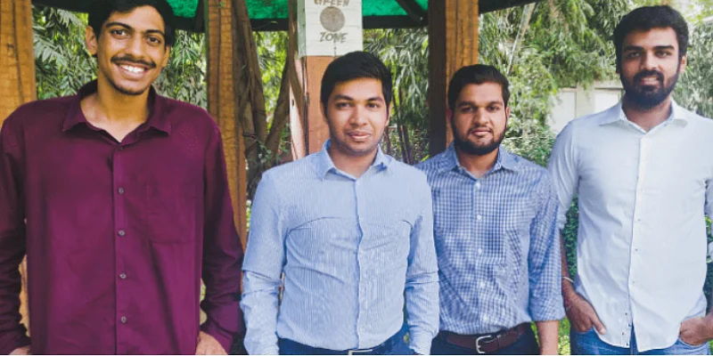
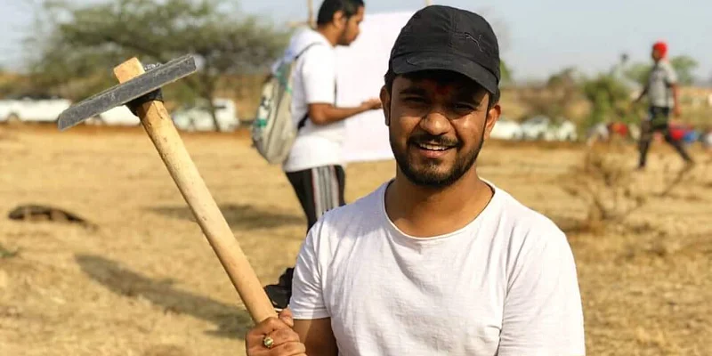

{% include 'includes/_navbar.html' %} {% include 'includes/_messages.html' %}
Document
Beco

Consumer goods startup Beco (Be Eco) was founded by Aditya Ruia, Anuj
Ruia, Punit Batra, and Akshay Varma in 2017. The startup is known for
manufacturing sustainable alternatives to single-use plastic products such
as facial tissues, toilet rolls, and kitchen towels. Most of Beco’s items
are made from the bamboo pulp and corn starch, and hence, are completely
eco-friendly. It has been using a specific type of bamboo called Moso,
which mainly grows in China, Maharashtra, and certain regions in Northeast
India. After witnessing the detrimental effect of plastic packaging on the
environment, the Mumbai-based startup decided to use only craft and
recycled paper for wrapping its products.
EcoBuddy

Despite having a few recycling units in the city, Pune still sees a large amount of plastic waste getting generated regularly. This caught Suraj Said’s eyes, and after brainstorming with his friends, he came up with the idea for ‘We are EcoBuddy.’
Suraj, along with his team of volunteers, started selling substitutes to single-use plastic products such as bamboo toothbrushes, cotton bags, among others. The startup has already sold around 34,500 products since its inception in May 2019, and is presently catering to over 600 orders on an average every month. It gets its products manufactured by seven vendors and has supported more than 250 lives in the process.
Besides this, EcoBuddy also conducts awareness workshops on composting, as well as tree plantation drives, to enlighten people.